notatki z moduu 4
W main opakowywujemy unikaln tre dla danej strony
M04L02: CSS: display, overflow [20:22]
偶ycie w pudeku


wiat stron internetowych jest paski (prawie cay)

div - nie ma znaczenia semantycznego, u偶ywamy gdy chcemy co "opakowa" (tylko kiedy nie istnieje odpowiedni semantyczny znacznik)
display

display: block - przenosi ostylowany element do nowej lini, element zajmuje ca dostpn szeroko

display: inline - wywietla elementy obok siebie, elementy s tak szerokie jaki ich zawarto/kontent/tre

display: inline-block - je偶eli elementy s wystarczajco mae, maj wystarczajco wsk zawarto, to zachowuj si inlinowo, jeli s tak szerokie, 偶e nic wicej sie nie zmieci, linia zamienia si w block

wartoci width / height okrelaj wysoko i szeroko pudeka. Przy display: inline s ignorowane

wartoci max-width / max-height pozwalaj na kurczenie si elementłów, dziki czemu na mniejszych ekranach nie pojawia si scroll. Elementy mog si kurczy, a jednoczenie nie bd wiksze ni偶 okrelona warto px

min-width / min-height NIE pozwalaj na kurczenie si elementłów bardziej ni偶 okrelona warto px, przez co na mniejszych ekranach mo偶e pojawia si scroll, ale dziki temu zmieci si kontent
overflow

overflow: hidden; - ucina tre, wszystko co nie zmieci si w pudeku, zostanie ukryte, zamiast wyjecha poza kontener
overflow: auto; - ucina tre, ale pozwala j przescrollowa, scroll jest widoczny cay czas
overflow: clip; - dziaa podobnie jak hidden, ale jest u偶ywane wtedy, gdy niektłóre elementy maj wystawa poza body
overflow: scroll; - wszystkie elementy, ktłóre nie mieszcz si w pudeku maj scroll, ale jest adniejszy i pojawia si dopiero po najechaniu kursorem na div
overflow: visible; - kontent, ktłóry si nie mieci jest wywietlany poza pudekiem, ale to miejsce nie jest rezerwowane, wic
je偶eli pod takim boxem dodamy kolejny div, to ich kontenty si na siebie nao偶 i strona bdzie nieczytelna
M04L03: CSS: jednostki [10:31]
szablon
test
test
test
test
test
test
0 możemy zapisywać bez jednostek
piksele
procenty
vw = viewport width
vh = viewport height
 BOX MODEL
Wszystkie elementy otoczone są "niewidzialnym" prostokątem
BOX MODEL
padding
zapis pełny / zapis skrótowy (shorthand)
wartości "lustrzane"
wartości wszystkie takie same
border
zapis pełny / zapis skrótowy (shorthand)
border-radius
margin
margin - zapisujemy tak samo jak padding
margin: __px auto;
Box model w devtools (wartości w px)
BOX MODEL
Wszystkie elementy otoczone są "niewidzialnym" prostokątem
BOX MODEL
padding
zapis pełny / zapis skrótowy (shorthand)
wartości "lustrzane"
wartości wszystkie takie same
border
zapis pełny / zapis skrótowy (shorthand)
border-radius
margin
margin - zapisujemy tak samo jak padding
margin: __px auto;
Box model w devtools (wartości w px)
box-sizing
https://www.abeautifulsite.net/box-sizing-border-box-explained
M04L04: CSS: box model [15:47]
szablon
M04L05: CSS: box-sizing [06:19]
szablon
M04L06: Position, float [21:04]
szablon
M04L07: JavaScript: typy i struktury danych, immutability [12:11]
szablon
M04L08: Normalizacja vs reset [11:04]
szablon
M04L09: Serwer lokalny [08:52]
szablon
M04L10: BEM [15:33]
szablon
M04L11: DOM-owe przedszkole [13:19]
szablon


 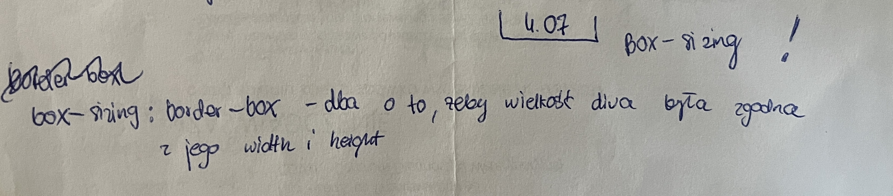
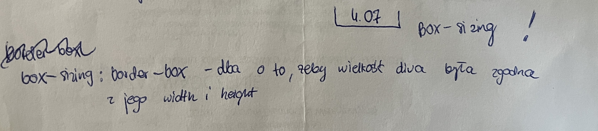
 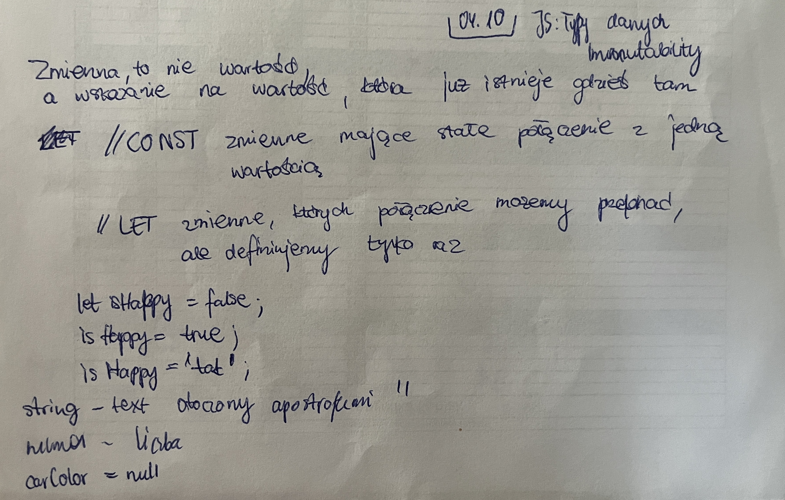
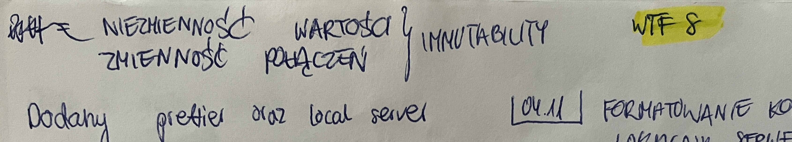
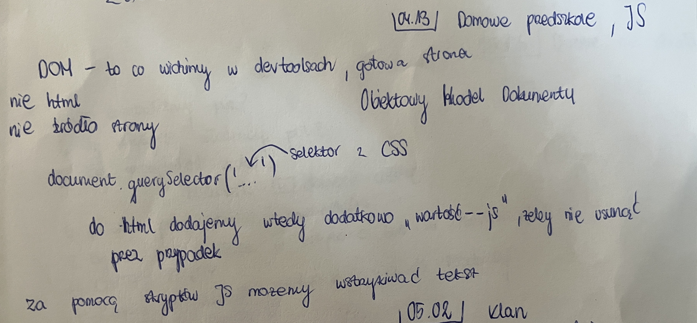
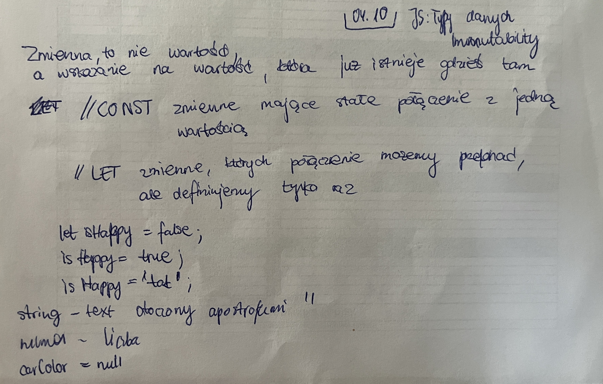
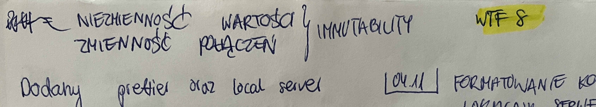
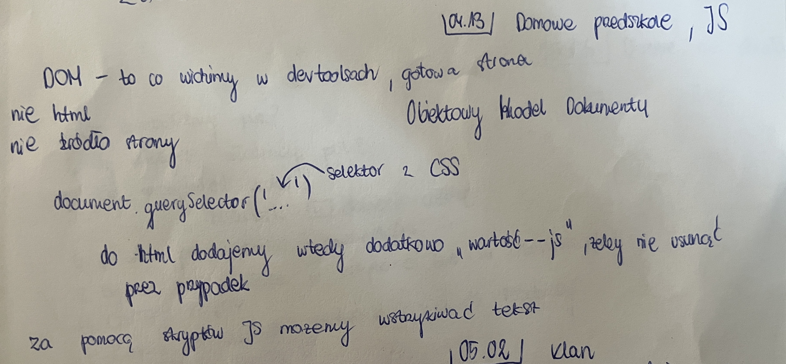


 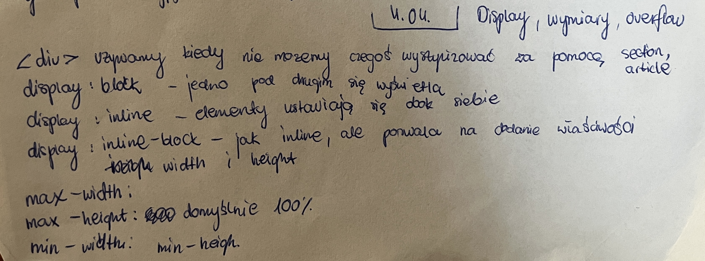
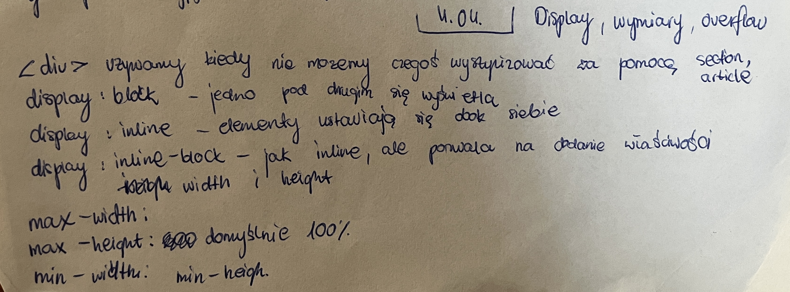
 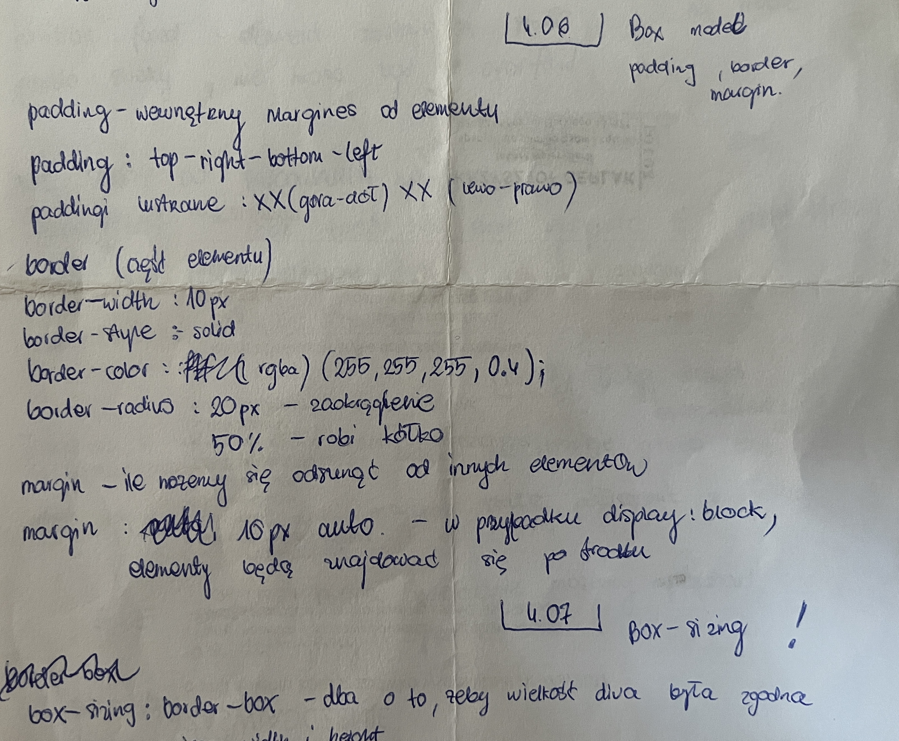
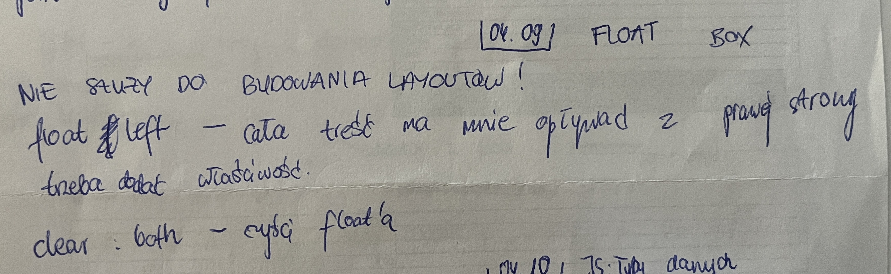
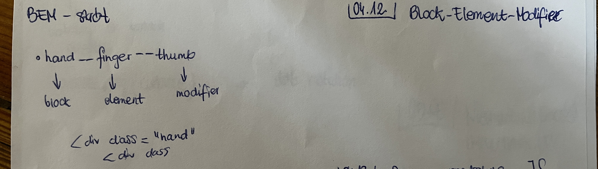
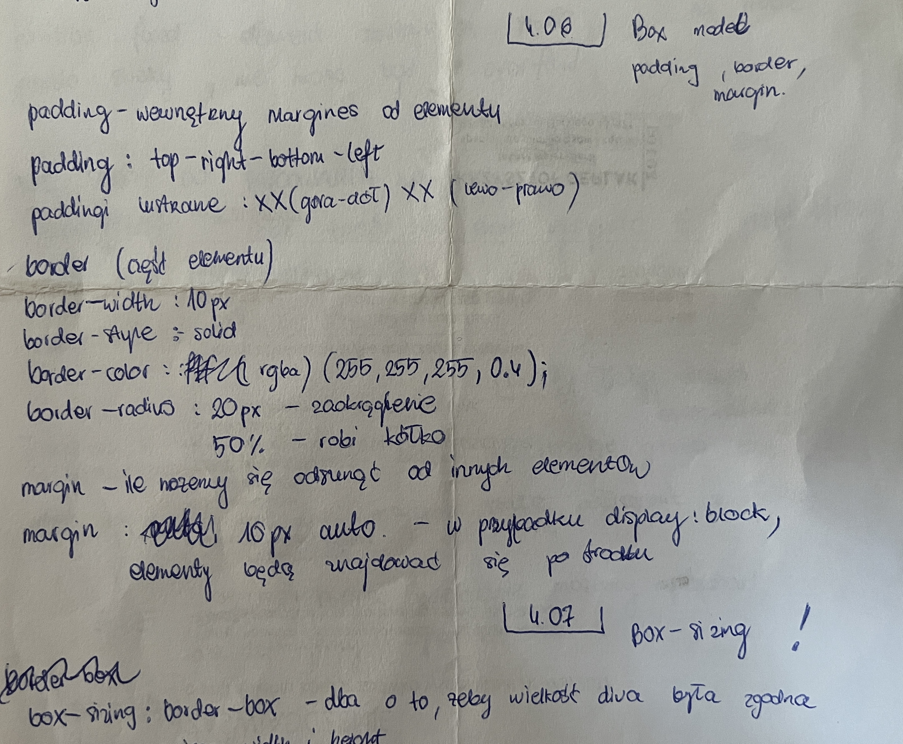
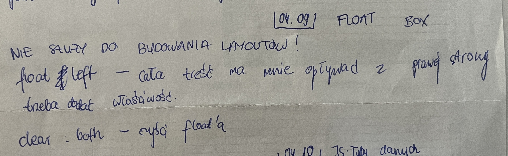
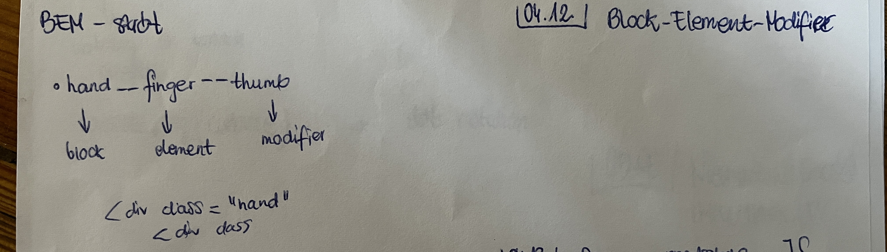
M04L12: Prace domowe tydzie IV [03:35]


WTF M04 LIVE
szablon